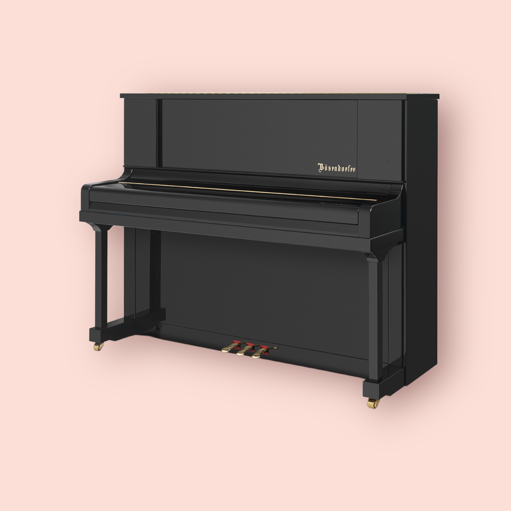
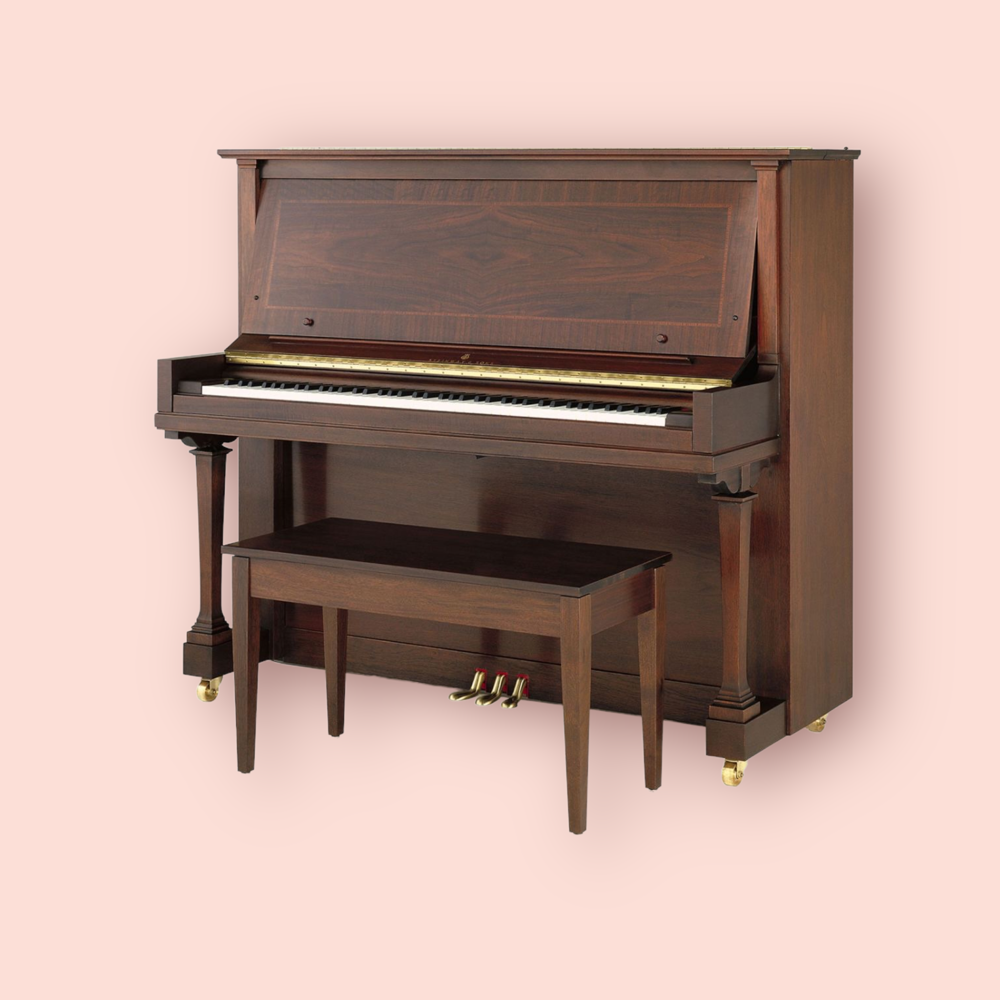
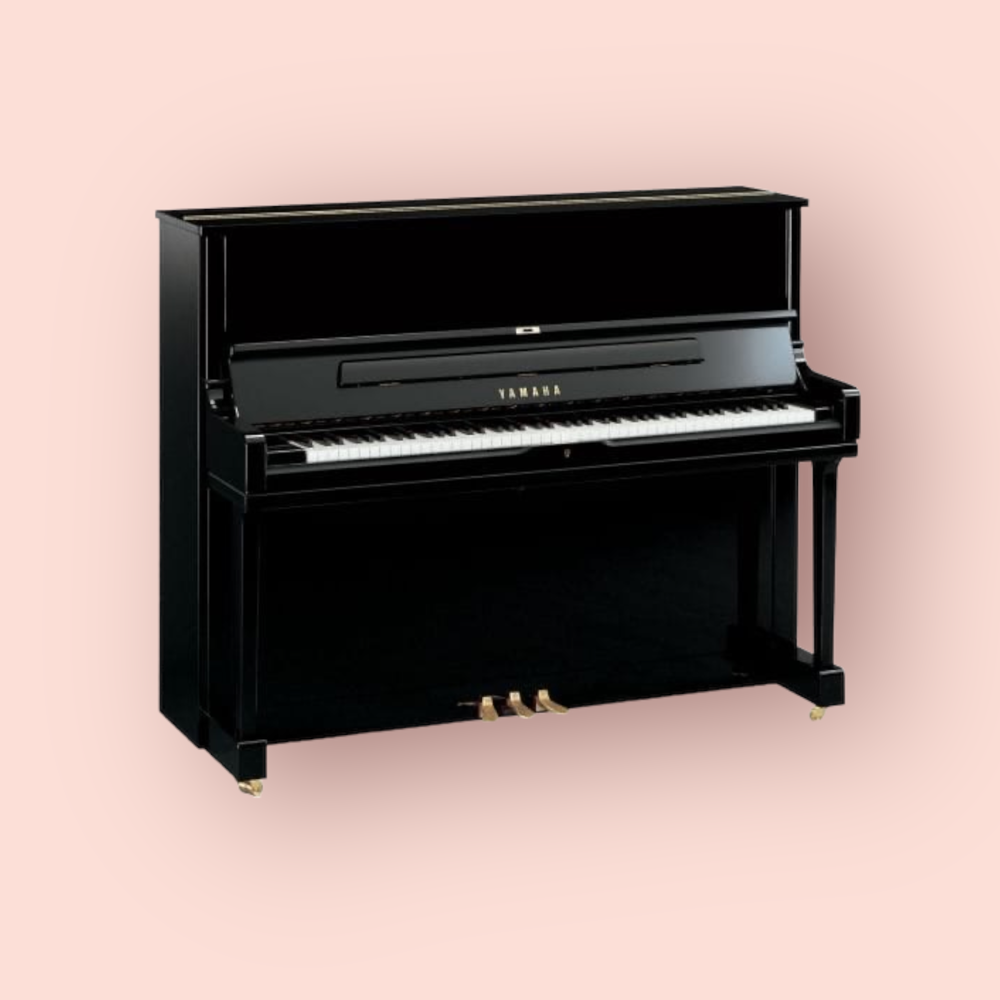

Catálogo de Pianos
Encuentra tu piano perfecto 💪
Encuentra tu piano perfecto 💪
💡Recuerda siempre probar varios pianos y tomarte el tiempo para encontrar el que mejor te acomode. Puedes venir a probar a nuestra tienda en Santiaguillo 1485, Santiago (ver mapa)
|  |
BösendorferTipo: Vertical Precio: desde $39.990.000 Bösendorfer no solo ha establecido nuevos estándares en la construcción de pianos de cola, sino que también ha transferido la experiencia, la tradición y el conocimiento de décadas de artesanía sofisticada a los pianos verticales. El Bösendorfer Grand Upright 120 se adapta a cualquier habitación y libera tonos voluminosos de Bösendorfer. Eliminando cualquier obstáculo a la expresión y articulación artística, Bösendorfer ha diseñado una acción con teclas más largas para optimizar el manejo y el tacto. Opcionalmente, este Grand Upright se puede equipar con el sistema de liberación de sonido Bösendorfer que proporciona dos ranuras de sonido adicionales en el panel frontal. Dimensiones únicas, sonido único: el Bösendorfer Grand Upright 120. |
|  |
Steinway and SonsTipo: Vertical Precio: desde $29.990.000 Los pianos verticales STEINWAY & SONS son manufacturados con el más alto estándar de calidad en la misma fábrica que nuestros pianos de cola, usando los mismos materiales, técnicas, procesos de acondicionamiento y artesanos. La única diferencia es que son construidos en el “departamento vertical,” donde esos mismos procesos son orientados verticalmente. El resultado es el piano vertical más fino del mundo, estando a la altura del nombre de STEINWAY & SONS en todo respecto. |
|  |
YamahaTipo: Vertical Precio: desde $19.990.000 Los pianos de la serie YUS comparten muchas características de nuestros pianos de la serie Flagship CF. Desde cuerdas alemanas enrolladas a mano y fieltro de martillo de calidad de concierto hasta una regulación y una sonoridad meticulosas que resaltan una gama de colores que recuerdan más a un piano de cola que a un piano vertical tradicional. Es simplemente el sonido vertical más grandioso disponible. |